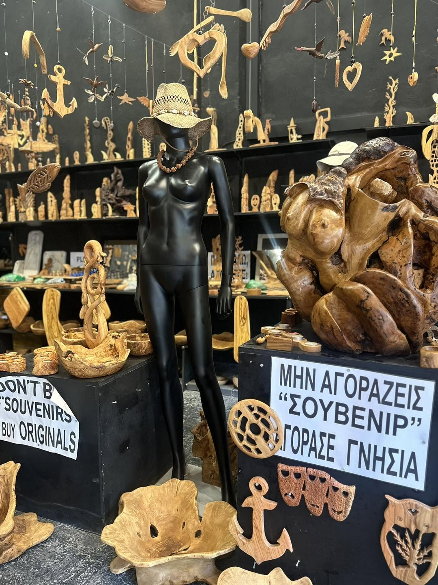

The artist
Meet Manolis
Manolis Tsouris is an olive wood artist from Crete. His workshop is dense, warm, strange, funny, and full of handmade originals.
This website is designed to translate the feeling of the physical workshop into a simple digital place where visitors can rediscover pieces and ask about shipping.
